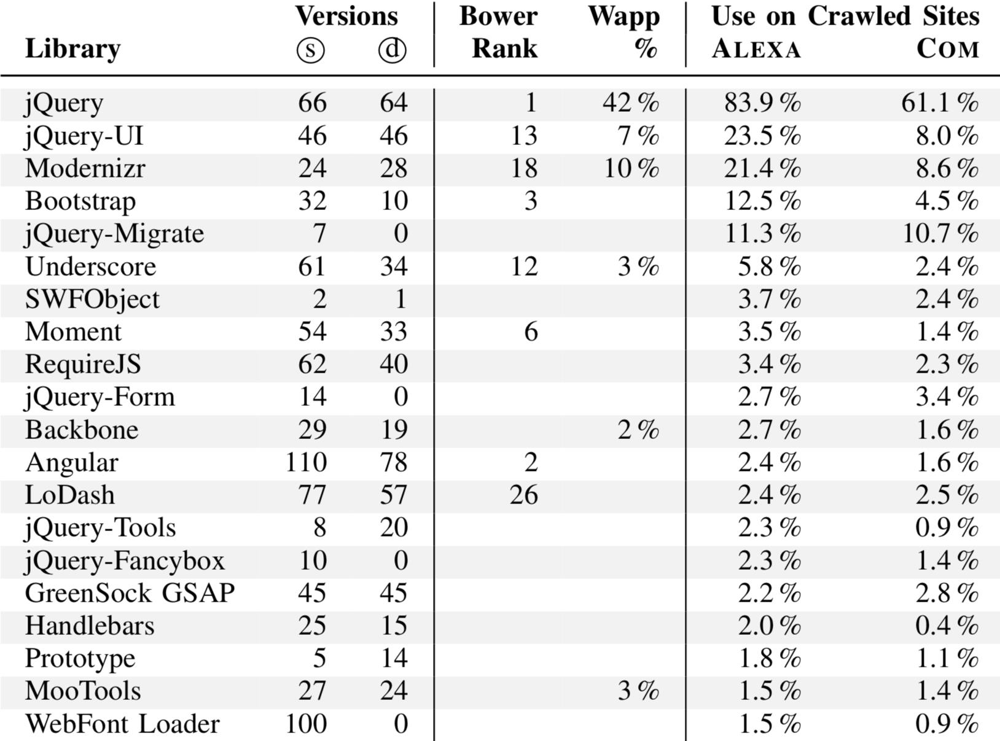
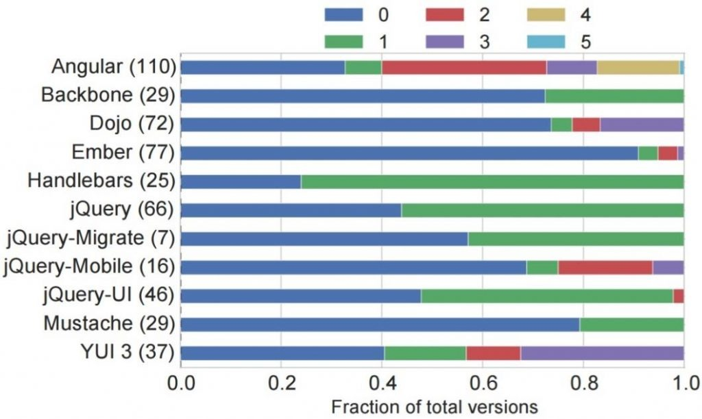
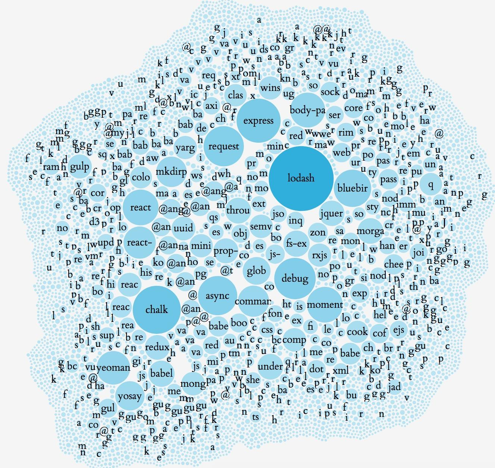
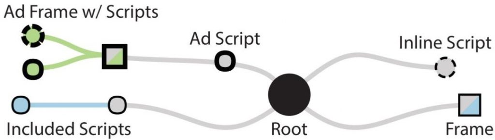
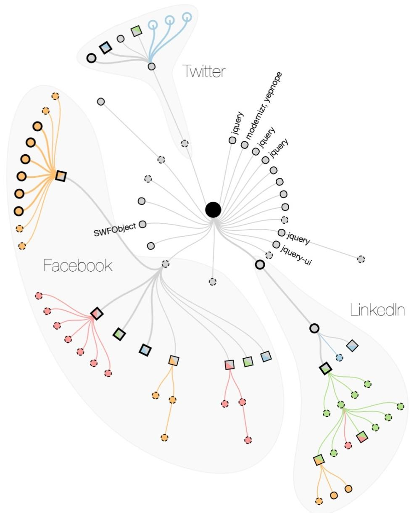
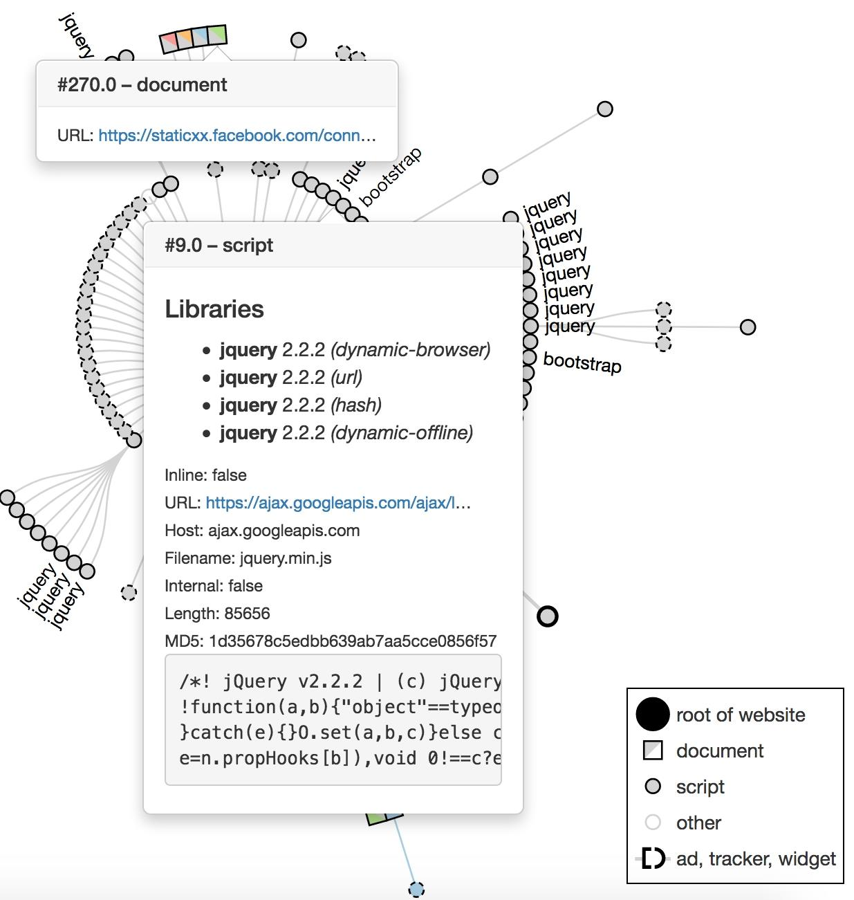

Data publicării: 05.12.2017
Autor articol: Sabin Buraga
Introducere
Articolul de față realizează o trecere în revistă a problematicii codului-sursă neactualizat și, de cele mai multe ori, “învechit” (outdated) al principalelor biblioteci JavaScript de care depind aplicațiile Web – unele de anvergură – actuale. Aceste biblioteci, framework-uri și/sau componente sunt disponibile la nivel de client (desktop, dispozitiv mobil, consolă etc.), fiind rulate în cadrul navigatorului Web.
Aria de interes este cea referitoare la mentenanța codului-sursă și a pachetelor software, unul dintre aspectele importante ale ingineriei dezvoltării de aplicații Web și nu numai – a se consulta, de asemenea, resursele puse la dispoziție de materiile “Dezvoltarea aplicațiilor Web la nivel de client” (Buraga, 2017), “Tehnologii Web” (Buraga, 2017) și “Tehnici avansate de inginerie software” (Iftene, 2017).
Secțiunea următoare plasează problematica în contextul riscurilor de securitate de care se pot “bucura” aplicațiilor Web actuale, urmând apoi a detalia o serie de aspecte referitoare la utilizarea pe scară largă a bibliotecilor JavaScript populare, inclusiv o analiză a folosirii la nivel de client a componentelor software neactualizate corespunzător, având versiuni cunoscute ca fiind vulnerabile.
Principalele riscuri de securitate a aplicațiilor Web
Codul “învechit” are frecvent repercursiuni profunde în ceea ce privește securitatea informatică, deoarece poate prezenta vulnerabilități semnificative. Astfel, conform (OWASP, 2017), în lista celor mai importante zece riscuri de securitate a siturilor/aplicațiilor Web se regăsesc și cele vizând browser-ul Web (front-end):
- Injectarea (injection) de comenzi potențial dăunătoare (SQL, NoSQL,…) incluse în datele preluate de la client din formulare Web sau via adrese Web (URL – Uniform Resource Locator).
- Autentificarea defectuoasă (broken authentication) a utilizatorului, inclusiv managementul eronat al sesiunilor Web.
- Expunerea de date (sensitive data exposure), cu implicații asupra intimității (privacy) și confidențialității.
- Execuția neautorizată a codului JavaScript (cross-site scripting – XSS) care permite preluarea datelor utilizatorilor, acțiuni de tip phising, redirecționare spre alte situri potențial malițioase, rularea de programe etc.
- Utilizarea de componente software care prezintă vulnerabilități cunoscute (using components with known vulnerabilities) – bibliotecile, modulele, framework-urile externe și extensiile browser-ului Web rulează cu aceleași privilegii ale aplicației în sine, astfel încât anumite vulnerabilități ale acestor componente pot fi exploatate, având impact asupra aplicației în cauză.
O parte dintre aceste riscuri apar și la aplicațiile Web mobile – a se studia lista oferită de proiectul
OWASP Mobile Security (2017). Suplimentar, se poate parcurge un raport privind securitatea aplicațiilor open-source pentru anul 2017.
Biblioteci JS populare
Această secțiune explorează situația utilizării pe scară largă a bibliotecilor JavaScript consacrate și – din nefericire, vulnerabile – neactualizate corespunzător, pe baza rezultatelor disponibile în (Lauinger et al., 2017).
Pentru aceasta, s-au investigat 75 de mii de domenii populare indexate de serviciul Alexa de măsurare a popularității, plus s-au preluat în mod aleatoriu alte 75 de mii de eșantioane de pe situri aparținând domeniului primar comercial (.com). Din lista de peste 2000 de biblioteci JS existente, s-a putut așadar detecta un număr de 72 cel mai frecvent folosite pentru a studia apoi procentul de cod prezentând vulnerabilități majore.
Din cele 72, în figura următoare este ilustrată lista primelor 20, pentru fiecare fiind precizate: numărul de versiuni disponibile – preluate din depozitul de cod (s) sau descoperite dinamic (d) –, rangul în clasamentul realizat de instrumentele Bower și, respectiv, Wapplyzer), plus procentul de utilizare efectivă în cadrul celor mai populare domenii raportate de Alexa sau de cele 75 de mii de domenii .com alese.

Studiul relevă faptul că jQuery este cea mai populară bibliotecă.
Din păcate nu există o listă globală centralizată vizând doar vulnerabilitățile bibliotecilor JS, deci s-a efectuat o procesare suplimentară pe baza datelor oferite de diverse surse publice – de exemplu:
- CVE (Common Vulnerabilities and Exposures);
- NVD (National Vulnerability Database) menținută de o agenție SUA;
- Lista vulnerabilităților cunoscute ale bibliotecilor JS abandonate, oferită de Retire.js;
- Rapoarte și comentarii specifice depozitelor de cod găzduite de Github.
Suplimentar, unele vulnerabilități pot fi detectate și raportate automat via un instrument precum Snyk care oferă și o listă a acestora.
Numărul de vulnerabilități distincte pentru 11 biblioteci bine-cunoscute (e.g., Angular, Backbone, Dojo, jQuery, Mustache.js) și fracțiunile de versiuni afectate sunt sintetizate în imaginea de mai jos.

Dependența de biblioteci JS neactualizate
Problema dependențelor componentelor software este bine-cunoscută în cadrul ingineriei programării și nu numai, fiind regăsită și sub denumirea colocvială “DLL hell”. O vizualizare a interdependenței modulelor Node.js – generată cu instrumentul David – poate fi urmărită în figura următoare.

Pentru studierea impactului pe care-l poate prezenta o versiune învechită a unei biblioteci asupra aplicației în ansamblu, autorii au implementat un instrument pentru generarea de arbori de cauzalitate care modelează “lanțul” dependențelor de cod al modulelor/bibliotecilor externe.
Iată o exemplificare, în care apar atât script-urile proprii aplicației (“scufundate” direct în codul HTML sau preluate din surse externe), cât și cele adiționale – aici, cele aparținând campaniilor de publicitate online.

În medie, un arbore de cauzalitate prezintă un număr de 133 de noduri, iar adâncimea sa este de 4 incluziuni de alte componente JS.
Ca exemplu concret, poate fi urmărită vizualizarea mai jos, în care se pot observa dependențele complexe dintre diverse biblioteci JS și alte componente externe (de tip widget) specifice rețelelor sociale – în acest caz, omniprezentele Facebook, LinkedIn și Twitter.

În ceea ce privește distribuția bibliotecilor vulnerabile, articolul relevă faptul că 37.8% din cele 75 de mii de situri indexate de serviciul Alexa recurg la cel puțin o versiune de bibliotecă JS cunoscută ca fiind vulnerabilă. Aplicațiile Web guvernamentale și cele financiare prezintă cele mai mari riscuri de securitate datorate neactualizării la timp a bibliotecilor JS. Mediana vechimii versiunii folosite față de versiunea cea mai recentă este de 1177 de zile, adică de peste 3 ani.
Un alt aspect de interes este cel referitor la includerea de biblioteci JS duplicate, după cum se poate observa în ilustrația următoare (aici, multiple instanțe ale bibliotecilor jQuery și Bootstrap). Aceasta poate avea consecință și asupra performanței aplicațiilor Web la nivel de client.

Încheiere
În cadrul acestui articol s-au prezentat problematica și aspectele semnificative privind utilizarea de biblioteci și alte componente JavaScript cu versiuni învechite, situație care prezintă un risc major de securitate, cu multiple implicații.
Aceste vulnerabilități pot fi incluse indirect și involuntar, pe baza script-urilor și widget-urilor specifice siturilor cu caracter social și publicitar, fără ca dezvoltatorii și utilizatorii să aibă control asupra codului-sursă rulat de navigatorul Web.
Un alt aspect care trebuie considerat este cel al detectării vulnerabilităților codului-sursă JavaScript al extensiilor instalate în cadrul browser-ului – a se studia (Zhao, Yue & Yi, 2015), (Baždarević & Dubell, 2017) și (Akshay Dev & Jevitha, 2017).
Referințe bibliografice
- Akshay Dev, P.K., Jevitha, K.P., “STRIDE Based Analysis of the Chrome Browser Extensions API”, Proceedings of the 5th International Conference on Frontiers in Intelligent Computing: Theory and Applications, AISC Volume 516, 2017.
- Baždarević, D., Dubell, M., “Collusion Attacks on Browser Extensions”, MSc Thesis, Department of Computer Science and Engineering, Chalmers University of Technology, University of Gothenburg, Sweden 2017: http://publications.lib.chalmers.se/records/fulltext/252868/252868.pdf
- Buraga, S., Dezvoltarea aplicațiilor Web la nivel de client,Facultatea de Informatică, Universitatea “Alexandru Ioan Cuza” din Iasi, Romania, 2017: http://profs.info.uaic.ro/~busaco/teach/courses/cliw/web-film.html
- Buraga, S., Tehnologii Web,Facultatea de Informatică, Universitatea “Alexandru Ioan Cuza” din Iasi, Romania, 2017: http://profs.info.uaic.ro/~busaco/teach/courses/web/web-film.html
- Iftene, A., Advanced Software Engineering Techniques, Facultatea de Informatică, Universitatea “Alexandru Ioan Cuza” din Iasi, Romania, 2017: http://profs.info.uaic.ro/~adiftene/Scoala/2018/ASET/
- Tobias Lauinger, Abdelberi Chaabane, Sajjad Arshad, William Robertson, Christo Wilson and Engin Kirda, “Thou Shalt Not Depend on Me: Analysing the Use of Outdated JavaScript Libraries on the Web”, Proceedings of the ISOC Network and Distributed System Security Symposium (NDSS), 2017: http://www.ccs.neu.edu/home/arshad/publications/ndss2017jslibs.pdf
- Zhao, R., Yue, C., Yi, Q., “Automatic Detection of Information Leakage Vulnerabilities in Browser Extensions”, WWW ’15 Proceedings of the 24th International Conference on World Wide Web, ACM, 2015.
- * * *, CVE (Common Vulnerabilities and Exposures): http://cve.mitre.org/
- * * *, David – a dependency management tool for Node.js projects: http://david-dm.org/
- * * *, NVD (National Vulnerability Database): http://nvd.nist.gov/
- * * *, OWASP Top 10 – The Ten Most Critical Web Application Security Risks, 2017: http://www.owasp.org/index.php/Category:OWASP_Top_Ten_Project
- * * *, OWASP Mobile Security Project, 2017: http://www.owasp.org/index.php/OWASP_Mobile_Security_Project
- * * *, Retire.js, 2017: http://retirejs.github.io/retire.js/
- * * *, Snyk, 2017: http://snyk.io/
- * * *, The State of Open Source Security, 2017: http://snyk.io/stateofossecurity/